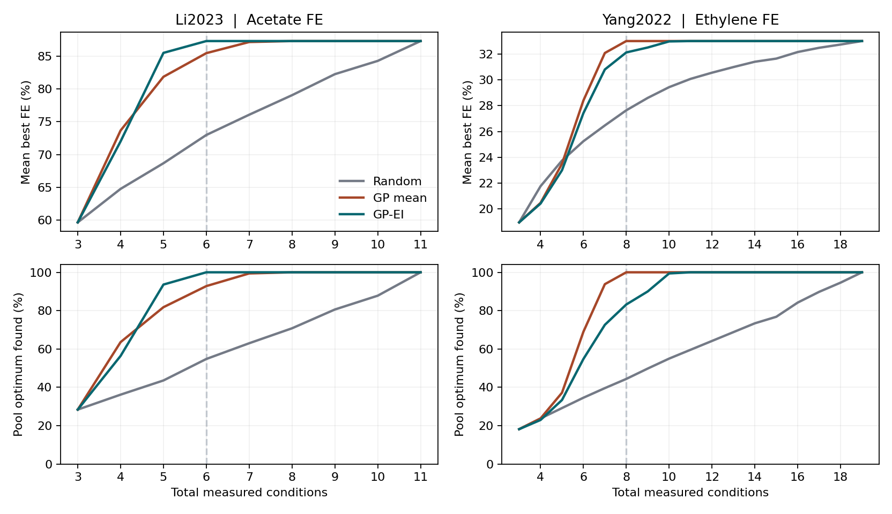

Does performance travel?
Compare a random split grouped by recorded condition with a split that holds out entire papers. Every model is evaluated on the same cohort.
↗COMPUTATIONAL RESEARCH · 2026
A reproducible evaluation of product-label prediction from published CO₂ electroreduction experiments, spanning 22 source papers.
01 — THE QUESTIONS
Product prediction becomes more informative when the evaluation reflects where a model will be used.
Compare a random split grouped by recorded condition with a split that holds out entire papers. Every model is evaluated on the same cohort.
↗Separate modifier-derived catalyst information from experimental conditions, then combine them under identical folds and a fixed model budget.
↗Evaluate probability scores, source-grouped sigmoid calibration and the relationship between confidence and accuracy on untouched outer predictions.
↗02 — THE EVIDENCE
A source-first audit connects every retained condition to an original worksheet row, citation block and explicit DOI.
raw worksheet rows
condition candidates
audited conditions · 23 DOIs
conditions · 22 DOIs
The label is the unique positive FE maximum among at least two explicitly reported individual carbon species. Blank values stay unreported. H₂ and aggregate C₂+/C₃+ columns do not enter this carbon-species comparison.
Class eligibility: ≥10 conditions and ≥3 DOI groups. Product groups are retained as reported, without merging rare chemical classes.
| Source | Reported scale | Acquisition evidence | Evaluation status |
|---|---|---|---|
| He et al. · 2023 ↗ | 237 selected points in repository description | 322 raw workbook rows downloaded; SHA256 verified | Primary cohort: 86 / 22 DOIs |
| Günay et al. · 2026 ↗ | 662 observations / 47 studies | Linked repository and workbook returned 404 | Not acquired |
| Farris et al. · 2026 ↗ | 3,880 postprocessed points | Publisher / supplementary routes returned 403 | Not acquired |
| Farris & Leonard · 2025 ↗ | Literature extraction study | 4,286 supplement rows; opaque PDF filenames | Paper grouping not established |
Reported source scale, downloaded rows and the analyzed cohort are separate quantities. The admitted source is analyzed independently.
| Recorded FE winner | Conditions | DOIs | Primary |
|---|
Consistent duplicates collapse with a trace map; conflicting labels at an indistinguishable recorded condition would exclude the whole group.
03 — INTERACTIVE RESULTS
Explore all four fixed classifiers and three feature views. Values are recomputed from saved outer-fold predictions.
| Model | Macro-F1 | Accuracy | Equal-study F1 | Log loss | Brier |
|---|
FEATURE ABLATION
Modifier features count explicit atom tokens and a broad polymer category. Condition features describe reported RHE potential, qualitative pH, electrolyte and reactor. Copper is shared throughout this cohort.
The table follows the protocol selected above. Same records, folds and fixed hyperparameters across feature views.
| Model | Modifier | Conditions | Combined |
|---|
CLASS-BY-CLASS
| Product | Conditions / DOIs | Precision | Recall | F1 |
|---|
Per-class scores use combined features and the current evaluation protocol. Global label order is fixed throughout the experiment.
Random forest · combined features · each subgroup includes its record and source support.
| Subgroup | Conditions | DOI groups | Accuracy | Log loss | Brier |
|---|
Subgroups describe model errors and recorded source context. Modifier-composition labels refer to atom tokens within copper systems. The source-identity audit finds four of ten electrolyte categories in only one DOI group, covering 24 of 86 records.
04 — PROBABILITY RELIABILITY
A class prediction and its confidence answer different questions. Inspect both with source-grouped calibration and untouched outer predictions.
Both sides use the same 56 records. Lower log loss and Brier indicate lower probability error. The multiclass Brier sums squared error across classes, without division by class count.
Sigmoid calibration uses explicit source-disjoint cross-fitting inside the outer training data. Two of three held-out-paper folds satisfy the required class and source coverage.
Full-cohort uncalibrated results remain available for all 86 records. The matched calibration analysis is reported separately.
Read the frozen procedure| Model | Log loss | Brier | Macro-F1 |
|---|
| Model | Probability state | Log loss | Brier | Macro-F1 |
|---|
05 — THE METHODOLOGY
The task, cohort, features, seeds, models and evaluation rules were frozen before inspecting outer performance.
Immutable source workbook, SHA256 verification, original worksheet rows, explicit citation headers and stable record IDs. Every raw row has an inclusion or exclusion decision.
Three-fold stratified group evaluation. Study-disjoint folds isolate DOI groups; both protocols keep recorded condition groups together. One OOF prediction per record, model and protocol.
Numeric median imputation and scaling; categorical missing tokens and one-hot encoding with unknown-category support. Every transform fits only on its training data.
Majority baseline, regularized logistic regression, random forest and histogram gradient boosting. Three feature sets, CPU execution and no hyperparameter search.
Macro-F1 and per-class recall, fixed-label confusion matrices, proper probability scores and a global confusion matrix weighted equally by source.
500 DOI-cluster bootstrap draws, paired records for model and feature comparisons, and conditional intervals from saved OOF predictions. The split-protocol contrast is descriptive.
Allowed: modifier atom tokens, polymer category and recorded experimental settings. Source identity, full modifier strings, measured FE, measured current, product text, titles, authors and years are excluded from model inputs.
Source-size weighting, reactor groups, missingness patterns and modifier-composition strata are inspected with their record and DOI support. The complete subgroup and source-influence tables accompany the report.
Feature-by-feature policy ↓06 — THE FIGURE COLLECTION
Open the publication figures at full resolution or download them for closer inspection.
PHASE 02 — SEQUENTIAL EXPERIMENT SELECTION
A retrospective replay tests whether a Gaussian process can find high-performing conditions within a fixed experimental budget.
THE REPLAY
Each policy starts with the same three conditions. It then selects one previously measured condition at a time and sees its reported Faradaic efficiency (FE) only after selection. The acetate data come from labeled means in Figures 2c, 3a and 3c of Li et al. The secondary ethylene pool uses measurements from Yang et al., as curated by the Wang Group.
THE RESULT
At six total acetate conditions, GP-EI found a higher best-so-far FE than random selection on average. The 95% paired replay interval was 12.9–15.8 percentage points. For ethylene, selecting the highest predicted mean performed best at eight conditions.

PHASE 2 · BUDGET CURVES
Dashed lines mark the reported comparison budgets. Each budget includes the three starting conditions.
Download budget curves (CSV) ↓| Cohort | Budget | Policy | Mean best FE | Best condition found |
|---|---|---|---|---|
| Li et al. · Acetate | 6 of 11 | Random | 73.0% | 54.8% |
| Li et al. · Acetate | 6 of 11 | GP mean | 85.5% | 92.8% |
| Li et al. · Acetate | 6 of 11 | Bayesian optimization (GP-EI) | 87.3% | 100.0% |
| Yang et al. · Ethylene | 8 of 19 | Random | 27.6% | 44.4% |
| Yang et al. · Ethylene | 8 of 19 | GP mean | 33.0% | 100.0% |
| Yang et al. · Ethylene | 8 of 19 | Bayesian optimization (GP-EI) | 32.1% | 83.2% |
The acetate conditions come from three one-variable sweeps. The results describe selection among already measured conditions. Prospective performance on new combinations and savings in physical experiments remain open questions.
07 — EXPLORE THE RESEARCH
The complete project connects the written analysis to the code, audit trail and individual outer-fold predictions.
Download and extract the research package first.
Run inside co2rr-cross-study/ · Python 3.12.14 · Linux · CPU
python -m pip install -r requirements.txt
python scripts/reproduce.pyThe Phase 1 dataset is associated with He et al. Figures from Li et al. provide acetate measurements for Phase 2. Other references document prior approaches and audited data candidates.